g
a
r
a
m
o
n
d
F
O
N
T
B
A
N
D
eb
Шрифт назван в честь своего создателя, французского пуансониста и издателя Клода Гарамона. Этот шрифт скорее признак эпохи, нежели дизайнерский артефакт. Известно, что Гарамон за 30 лет своей работы нарезал немало шрифтов, но до нас они почти не дошли.
Шрифты Гарамона стоят почти у самых истоков типографской антиквы, там, где рисунок букв уже достиг зрелой и выразительной рабочей формы, но еще не стал изощренным и вычурным, сохраняя элегантность и благородную неподдельную простоту.
till 5 am
welcome, we are
open
jazz is for ordinary people like this font for brands
Шрифт назван в честь своего создателя, французского пуансониста и издателя Клода Гарамона. Этот шрифт скорее признак эпохи, нежели дизайнерский артефакт. Известно, что Гарамон за 30 лет своей работы нарезал немало шрифтов, но до нас они почти не дошли.
jazz is for ordinary people like this font for brands
Шрифт назван в честь своего создателя, французского пуансониста и издателя Клода Гарамона. Этот шрифт скорее признак эпохи, нежели дизайнерский артефакт. Известно, что Гарамон за 30 лет своей работы нарезал немало шрифтов, но до нас они почти не дошли.
Роберт Брингхерст так характеризует начертания Клода Гарамона: «...величественные формы высокого Ренессанса с гуманистическим наклоном осей, умеренным контрастом и длинными выносными элементами»

Америка 159 языков
Азия 88 языков
Европа 151 язык
Африка 161 язык
Океания 25 языков
